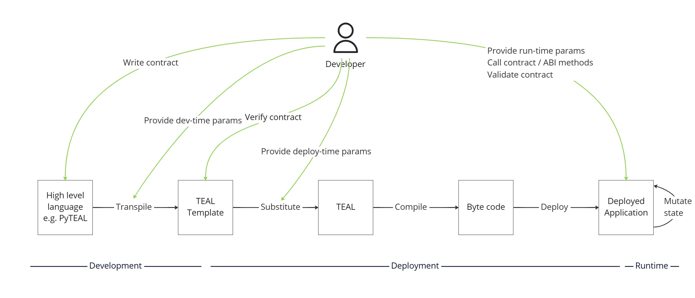

App deployment
Idempotent (safely retryable) deployment of an app, including deploy-time immutability and permanence control and TEAL template substitution
App deployment is a higher-order use case capability provided by AlgoKit Utils that builds on top of the core capabilities, particularly App management. It allows you to idempotently (with safe retryability) deploy an app, including deploy-time immutability and permanence control and TEAL template substitution.
To see some usage examples check out the automated tests.
Design
The architecture design behind app deployment is articulated in an architecture decision record. While the implementation will naturally evolve over time and diverge from this record, the principles and design goals behind the design are comprehensively explained.
Namely, it described the concept of a smart contract development lifecycle:
Development
Write smart contracts
Transpile smart contracts with development-time parameters (code configuration) to TEAL Templates
Verify the TEAL Templates maintain output stability and any other static code quality checks
Deployment
Substitute deploy-time parameters into TEAL Templates to create final TEAL code
Compile the TEAL to create byte code using algod
Deploy the byte code to one or more Algorand networks (e.g. LocalNet, TestNet, MainNet) to create Deployed Application(s)
Runtime
Validate the deployed app via automated testing of the smart contracts to provide confidence in their correctness
Call deployed smart contract with runtime parameters to utilise it

The App deployment capability provided by AlgoKit Utils helps implement #2 Deployment.
Furthermore, the implementation contains the following implementation characteristics per the original architecture design:
Deploy-time parameters can be provided and substituted into a TEAL Template by convention (by replacing
TMPL_{KEY})Contracts can be built by any smart contract framework that supports ARC-0032 and ARC-0004 (Beaker or otherwise), which also means the deployment language can be different to the development language e.g. you can deploy a Python smart contract with TypeScript for instance
There is explicit control of the immutability (updatability / upgradeability) and permanence (deletability) of the smart contract, which can be varied per environment to allow for easier development and testing in non-MainNet environments (by replacing
TMPL_UPDATABLEandTMPL_DELETABLEat deploy-time by convention, if present)Contracts are resolvable by a string “name” for a given creator to allow automated determination of whether that contract had been deployed previously or not, but can also be resolved by ID instead
Finding apps by creator
There is a method algokit.get_creator_apps(creatorAccount, indexer), which performs a series of indexer lookups that return all apps created by the given creator. These are indexed by the name it
was deployed under if the creation transaction contained the following payload in the transaction note field:
ALGOKIT_DEPLOYER:j{name:string, version:string, updatable?:boolean, deletable?:boolean}
Any creation transactions or update transactions are then retrieved and processed in chronological order to result in an AppLookup object
Given there are a number of indexer calls to retrieve this data it’s a non-trivial object to create, and it’s recommended that for the duration you are performing a single deployment you hold a value of it rather than recalculating it. Most AlgoKit Utils functions that need it will also take an optional value of it that will be used in preference to retrieving a fresh version.
Deploying an application
The method that performs the deployment logic is the instance method ApplicationClient.deploy. It performs an idempotent (safely retryable) deployment. It will detect if the app already
exists and if it doesn’t it will create it. If the app does already exist then it will:
Detect if the app has been updated (i.e. the logic has changed) and either fail or perform either an update or a replacement based on the deployment configuration.
Detect if the app has a breaking schema change (i.e. more global or local storage is needed than was originally requested) and either fail or perform a replacement based on the deployment configuration.
It will automatically add metadata to the transaction note of the create or update calls that indicates the name, version, updatability and deletability of the contract.
This metadata works in concert with get_creator_apps to allow the app to be reliably retrieved against that creator in it’s currently deployed state.
deploy automatically executes template substitution including deploy-time control of permanence and immutability.
Input parameters
The following inputs are used when deploying an App
version: The version string for the app defined in app_spec, if not specified the version will automatically increment for existing apps that are updated, and set to 1.0 for new appssigner,sender: Optional signer and sender for deployment operations, sender must be the same as the creator specifiedallow_update,allow_delete: Control the updatability and deletability of the app, used to populateTMPL_UPDATABLEandTMPL_DELETABLEtemplate valueson_update: Determines what should happen if an update to the smart contract is detected (e.g. the TEAL code has changed since last deployment)on_schema_break: Determines what should happen if a breaking change to the schema is detected (e.g. if you need more global or local state that was previously requested when the contract was originally created)create_args: Args to use if a create operation is performedupdate_args: Args to use if an update operation is performeddelete_args: Args to use if a delete operation is performedtemplate_values: Values to use for automatic substitution of deploy-time parameter values is mapping ofkey: valuethat will result inTMPL_{key}being replaced withvalue
Idempotency
deploy is idempotent which means you can safely call it again multiple times, and it will only apply any changes it detects. If you call it again straight after calling it then it will
do nothing. This also means it can be used to find an existing app based on the supplied creator and app_spec or name.
Compilation and template substitution
When compiling TEAL template code, the capabilities described in the design above are present, namely the ability to supply deploy-time parameters and the ability to control immutability and permanence of the smart contract at deploy-time.
In order for a smart contract to be able to use this functionality, it must have a TEAL Template that contains the following:
TMPL_{key}- Which can be replaced with a number or a string / byte array which wil be automatically hexadecimal encodedTMPL_UPDATABLE- Which will be replaced with a1if an app should be updatable and0if it shouldn’t (immutable)TMPL_DELETABLE- Which will be replaced with a1if an app should be deletable and0if it shouldn’t (permanent)
If you are building a smart contract using the beaker_production AlgoKit template if provides a reference implementation out of the box for the deploy-time immutability and permanence control.
Return value
deploy returns a DeployResponse object, that describes the action taken.
action_taken: Describes what happened during deploymentCreate- The smart contract app is created.Update- The smart contract app is updatedReplace- The smart contract app was deleted and created again (in an atomic transaction)Nothing- Nothing was done since an existing up-to-date app was found
create_response: If action taken wasCreateorReplace, the result of the create transaction. Can be aTransactionResponseorABITransactionResponsedepending on the method usedupdate_response: If action taken wasUpdate, the result of the update transaction. Can be aTransactionResponseorABITransactionResponsedepending on the method useddelete_response: If action taken wasReplace, the result of the delete transaction. Can be aTransactionResponseorABITransactionResponsedepending on the method usedapp: AnAppMetaDataobject, describing the final app state